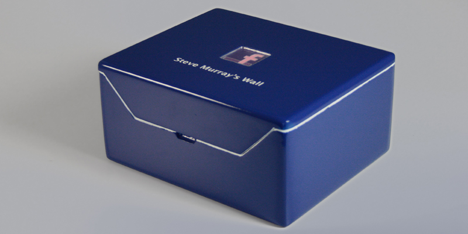

The Facebook Box explores the possibility of a physical social network by keeping every piece of digital activity as a physical document. This creates a new way to use social networks and establishes that social networking no longer needs to be restricted to the confines of a digital display. The Facebook Box has the ability to detect activity on your wall, once activity is sensed, the logo on the lid of the box is illuminated to notify the user of new posts. Upon opening the lid, each new post is printed onto a small piece of paper ready to be filed into the correct section of the filing area.